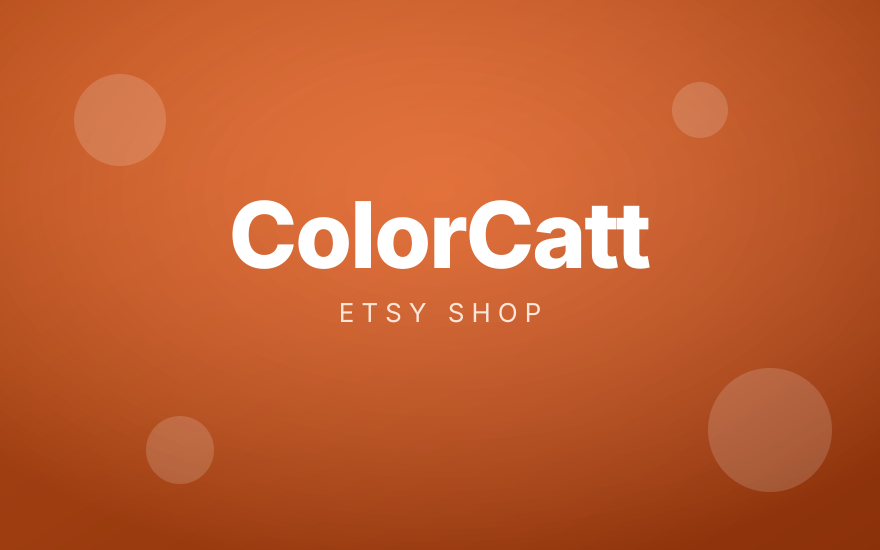

Elyotam
Cohen
Web Development & AI Automation
Cloud Infrastructure & DevOps
Background
More about me

Selected work
Eight projects

Side project
ColorCatt
Build it, ship it, then keep it running.
The same person writes the code and owns the server it lands on.
Say hello
Find me here
10Public
repositories
repositories
4Live
client sites
client sites
34Tools
in the stack
in the stack